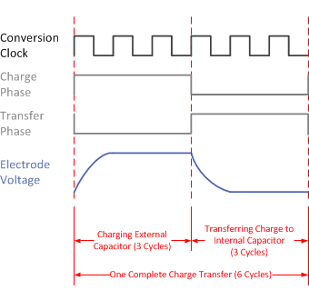

The two phase length parameters (Charge_Hold_Phase_Length and Transfer_Sample_Phase_Length) control the length of the charge/hold and transfer/sample phases, respectively. The length is set in conversion clock periods. Thus, the total phase length is the conversion clock divider (the Frequency_Divider parameter) divided by the conversion oscillator base frequency, multiplied by the phase length parameter. Each measurement, or "conversion," consists of a series of charge transfers. For a self capacitance sensor, a charge transfer is composed of a charge phase and a transfer phase. During the charge phase, the external capacitor being measured is charged to a known voltage. Then, during the transfer phase, that charge is moved into an on-chip tank capacitor (the sample capacitor). Charge transfers run until the sample capacitor is full. The output of the conversion is the number of charge transfers required to fill the sample capacitor. The diagram below illustrates the self capacitance case, with both phases set to 3.

The charge phase must be set long enough to ensure that the external electrode being measured is getting fully charged each cycle. The transfer phase must be set long enough to ensure that the charge is fully transferred to the sample capacitor. Larger external capacitances require longer phase lengths, as they take longer to charge and discharge.
Mutual capacitance works in a similar way. There is a hold phase and a sample phase. During the hold phase, the transmit electrode is grounded and the receive electrode is driven by the previous sampled voltage to remove any effects of parasitic capacitance to ground. During the sample phase, the transmit electrode is pulled up to a known voltage, reversing the polarity of the mutual capacitor and causing charge to be pushed through the mutual capacitance and into the internal sample capacitor.
Implementation Notes
The effective phase lengths in units of time is also adjustable by increasing or decreasing the frequency divider that
sources the conversion clock.
Affected Software Parameters
The Charge_Hold_Phase_Length parameter corresponds to the
ui8ChargeLength
member of the
tSensor
type in the CapTIvate Touch Library.
The Transfer_Sample_Phase_Length parameter corresponds to the
ui8TransferLength
member of the
tSensor
type in the CapTIvate Touch Library.